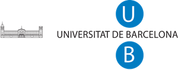
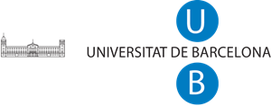

Founding Product Engineer
Curso AI-native para product builders que quieren construir, no solo gestionar.
Formación intensiva donde producto, ingeniería e IA convergen. Curriculum propio, casos reales, herramientas reales.
Hola, soy
El trabajo del futuro no es un puesto.
Es una forma de operar.
Construyo productos AI-native, enseño las profesiones del futuro y estudio por qué la tecnología transforma sociedades.
 

Cuando llegó la electricidad, las fábricas que ganaron no pusieron bombillas — rediseñaron la cadena de producción entera. Con internet pasó igual. Con la IA está pasando ahora. Ser AI-native es repensar procesos, perfiles y estructura. No es automatizar. Es redefinir.
Siempre al revés: entiende el negocio, valida la necesidad, construye sin paja ni atajos.
Estudio Sociología siendo ingeniero. Porque entender estructura — mercados, organizaciones, adopción — es entender por qué unos productos escalan y otros no. Si no entiendes el sistema donde opera tu producto, optimizas para nadie.
Barcelona
Product leader, emprendedor y profesor. Más de 10 años construyendo productos digitales — de startup a scale-up, de growth a VP. Ahora construyo con IA y enseño a otros a hacerlo.
Curso AI-native para product builders que quieren construir, no solo gestionar.
Formación intensiva donde producto, ingeniería e IA convergen. Curriculum propio, casos reales, herramientas reales.
De la idea a producción en 6 meses. Full-stack, solo.
Agentes de IA para marketing: orquestación multi-modelo (OpenAI, Anthropic), RAG con bases vectoriales, workflows autónomos con Prefect. Full-stack Python/FastAPI + NextJS.
+20 personas, 4 squads, estrategia alineada con EBITDA.
Organización de producto completa incluyendo equipos de ML. Pipelines de deep learning en Databricks. Modelos de colaboración inter-squad para optimización de revenue y margen.
Cultura de experimentación desde cero: A/B testing, CRO, retención.
Framework de experimentación, programa de CRO, loops de retención. Después lideré implementación de ERPs (OpenBravo, Netsuite Oracle) y modelos de forecasting.
De la ingeniería industrial a la sociología — formación transversal por convicción, no por casualidad.
Dos proyectos propios: un curso AI-native para product builders y un SaaS de agentes de IA para marketing. De la idea a producción, full-stack.
Marketing Analytics y Digital Business Models. Datos reales, herramientas reales.
Porque la tecnología es para personas.
Orquestación multi-modelo, workflows autónomos, el futuro de la interacción humano-máquina.
¿Quieres debatir sobre producto, IA, o por qué un ingeniero estudia sociología? Escríbeme.